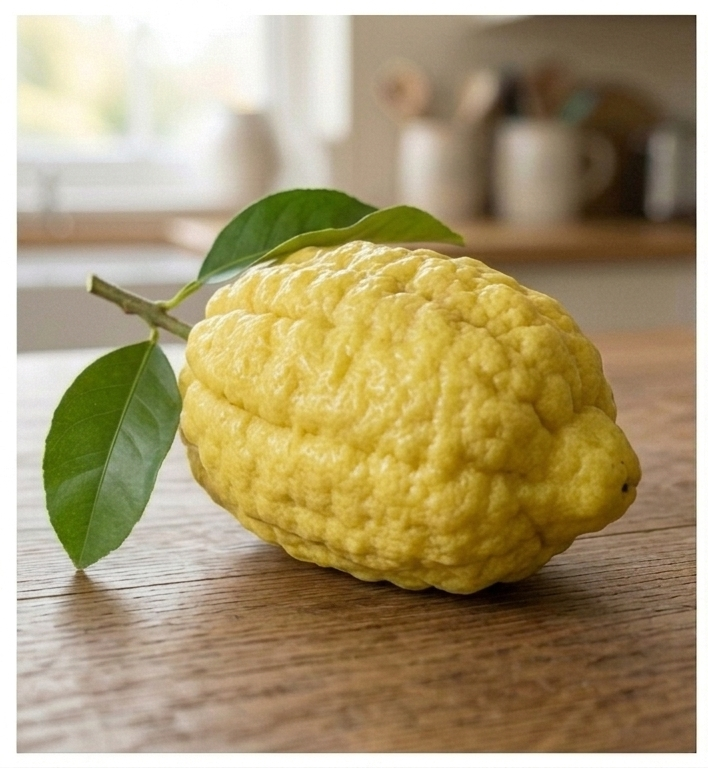

What is a Citron?

The citron (Citrus medica) is one of the foundational, original wild citrus species from which most modern citrus fruits evolved. Unlike common citrus fruits, it is primarily valued for its massive, thick, and intensely aromatic rind rather than its minimal, dry juice pulp.
Key Characteristics
- Taste: The small amount of pulp is dry and mildly acidic, while the white pith is surprisingly sweet.
- Peel: Very thick, bumpy, leathery, and rich in fragrant essential oils.
- Ancestry: One of the original core citrus species, acting as a direct parent to the lemon.
Popular Varieties
Citrons include several unique cultivars:
- Fingered Citron: Also known as Buddha's Hand, featuring long, finger-like segments.
- Etrog: A smooth-skinned variety essential to Jewish religious rituals.
- Corsican Citron: A sweet-pith variety widely used for making fine jams and liqueurs.
Cultural Significance
The citron holds immense spiritual value across cultures. In East Asia, the Buddha's Hand variety symbolizes happiness and longevity, often used as a home freshener. In Jewish tradition, the Etrog is a sacred element used during the annual holiday of Sukkot.